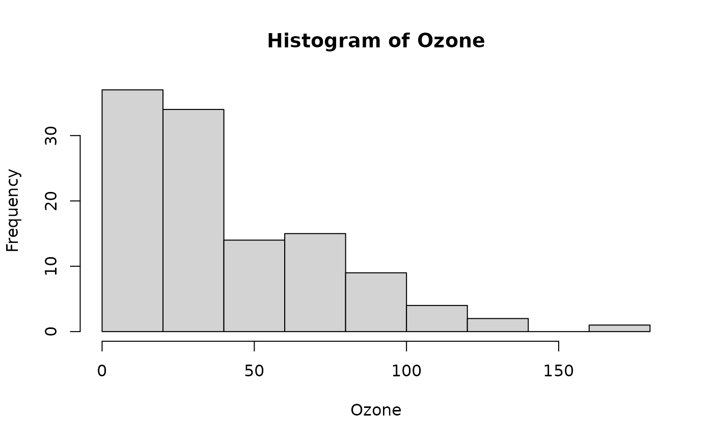
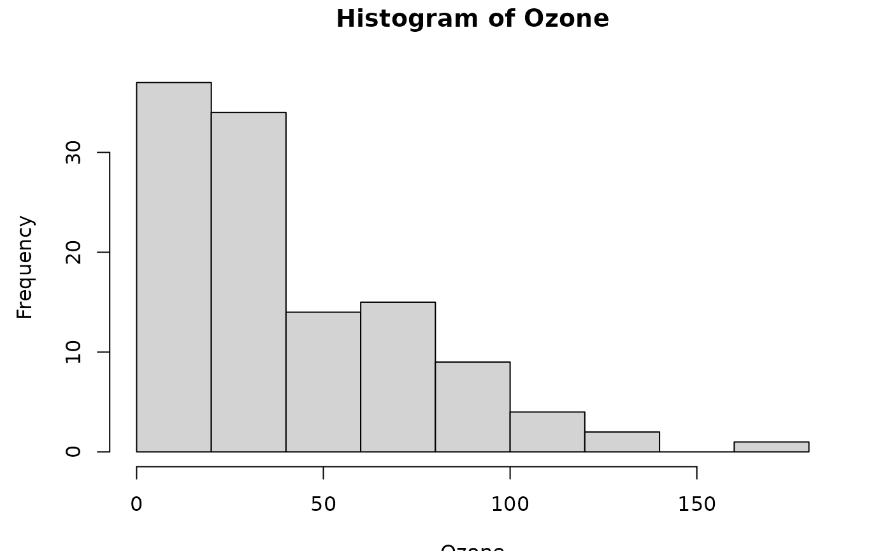
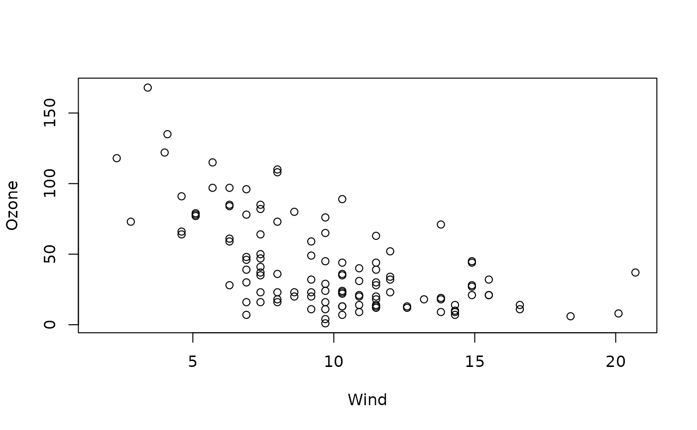

What's this figure?
WTF.RdDetermine what the current graphics device has on it so the blind user can be sure they have something they want, or find out what it might be that is contained in a graphics device.
Examples
attach(airquality)
hist(Ozone)

WTF()

#> This graph has the main title "Histogram of Ozone"; and o subtitle;
#> "Ozone" as the x axis label;
#> "Frequency" as the y axis label;
#> There are no points marked on the graph.
plot(Ozone~Wind)

WTF()
#> This graph has the main title "Histogram of Ozone"; and o subtitle;
#> "Ozone" as the x axis label;
#> "Frequency" as the y axis label;
#> There are no points marked on the graph.
detach(airquality)